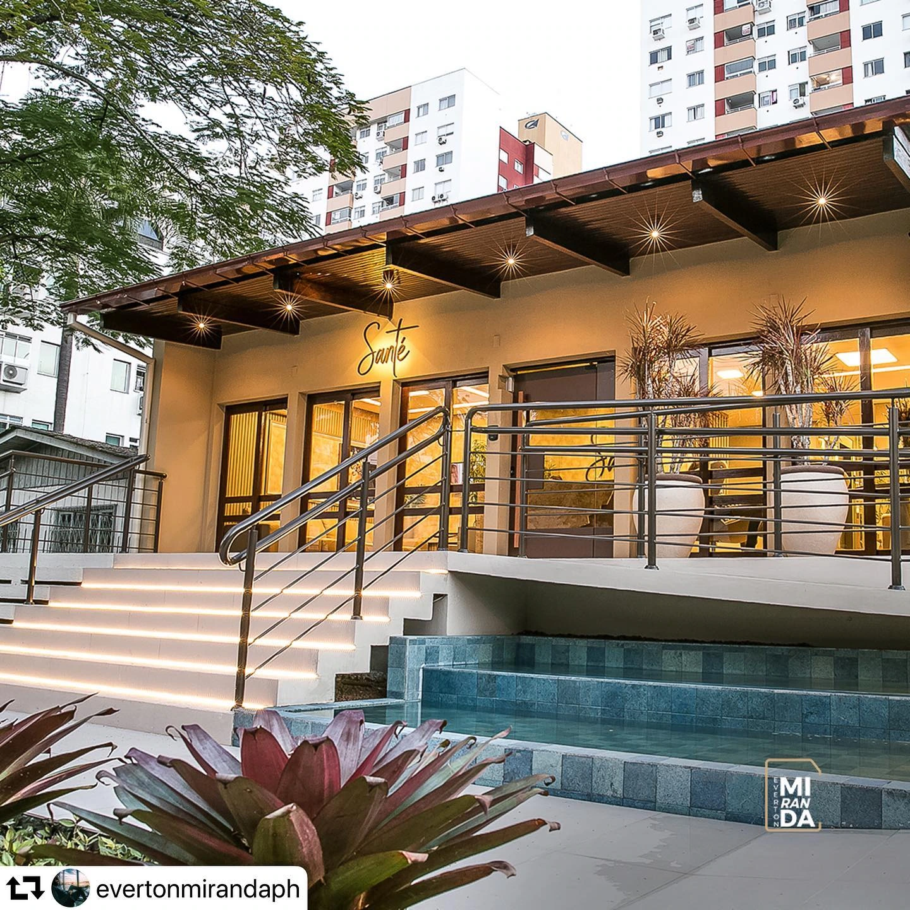
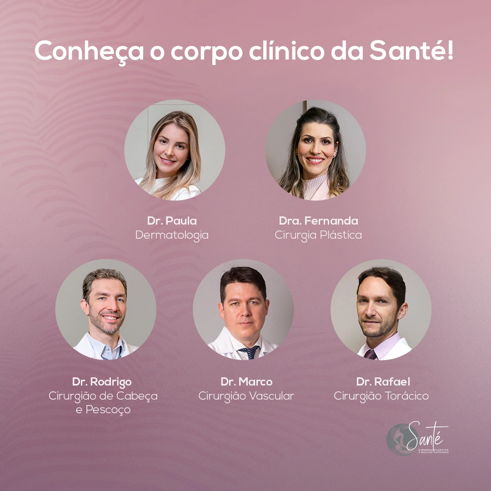

O cuidado
tem um lugar.
Medicina integrada em Criciúma. Conheça as especialidades da Santé e converse com a recepção sobre sua consulta.
Encontre seu atendimento
Entre. Vamos cuidar.
Seu próximo passo começa com orientação.
Conheça a Santé ↓
Diferentes olhares.
Um mesmo cuidado.
Encontre a especialidade que procura. A recepção orienta sobre profissionais, consultas e agendamento.
Conhecer faz
parte de cuidar.
A Santé apresenta seu corpo clínico no Instagram. Conheça as especialidades e confirme com a recepção o profissional e o atendimento desejados.
Conhecer o corpo clínico
O caminho
até a Santé.
Rua João Cechinel, 440
Criciúma · SC
Consulte horários e orientações com a recepção.
Seu primeiro
passo, aqui.
Escolha a especialidade ou fale diretamente com a recepção.
Falar com a recepção